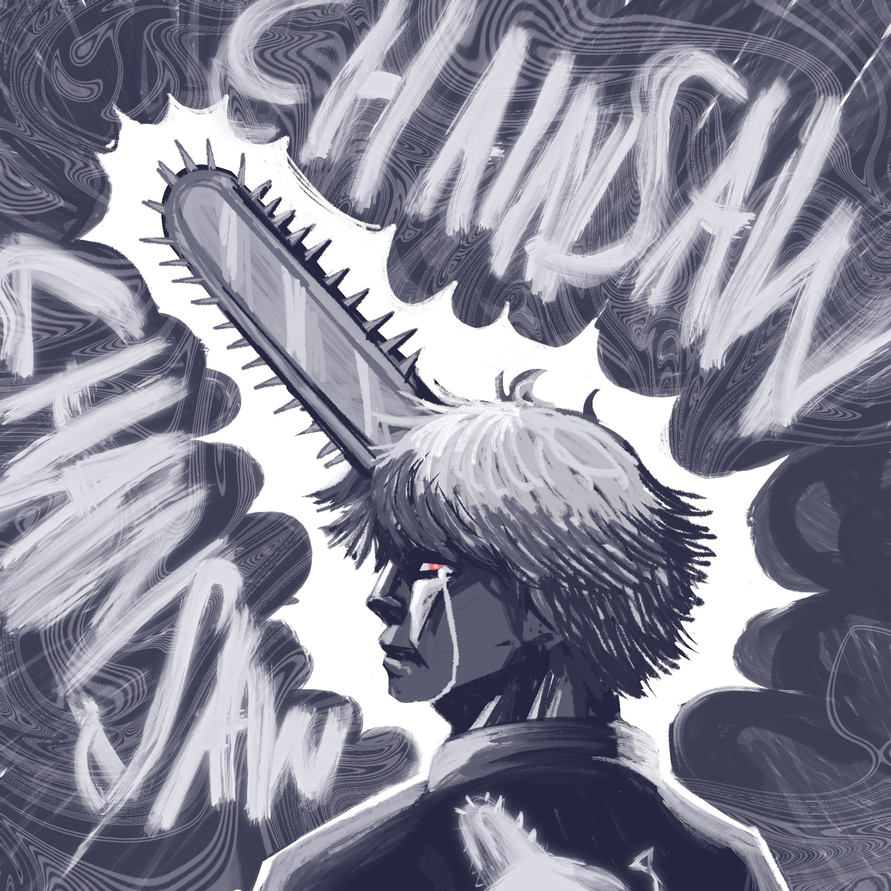
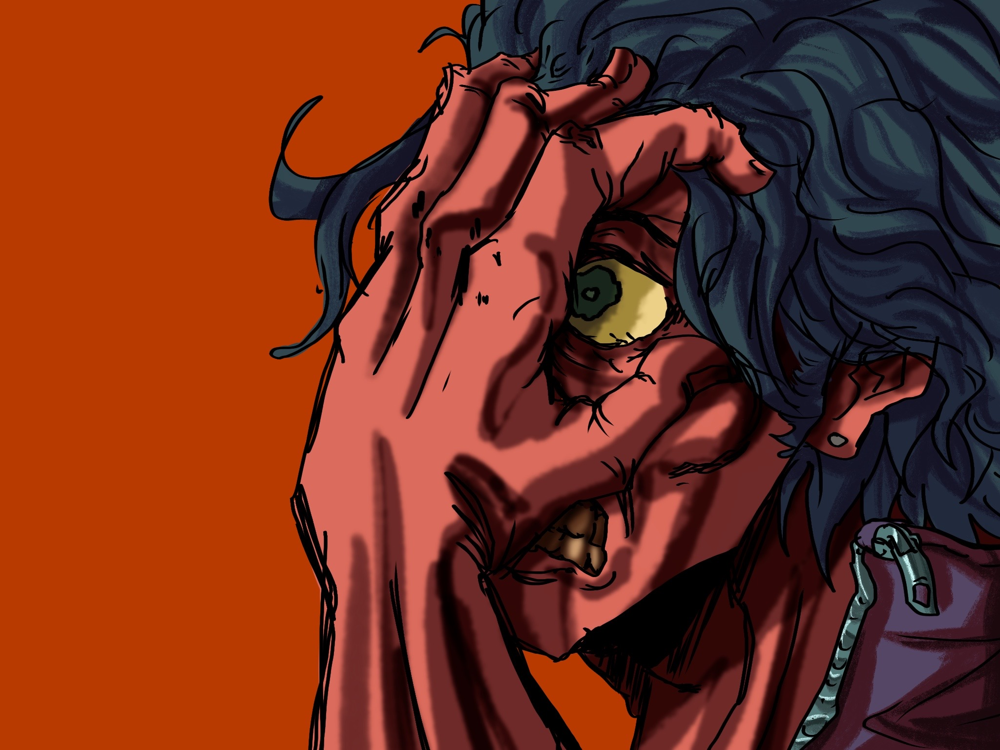
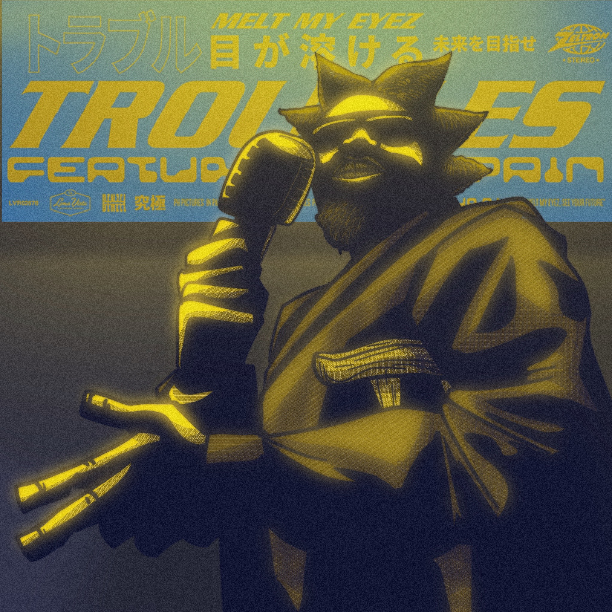

Digital Artwork




This is my Digital Artwork! This is the media I use the most. I used the program Procreate for these illustrations. My first digital projects were done on my Iphone 6 scribbling with my finger. I am happy to see my imrpovement with color and the human form.